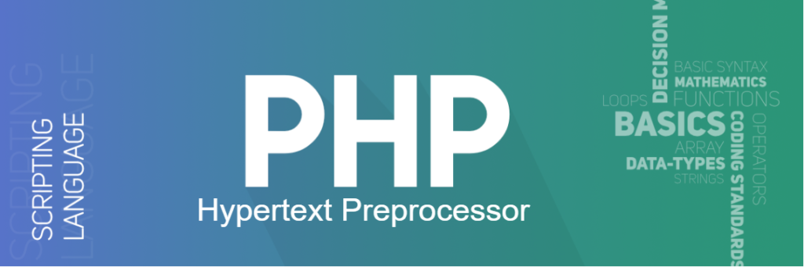

Introduction PHP
Introduction
The term PHP is an acronym for PHP: Hypertext Preprocessor. PHP is a server-side scripting language designed specifically for web development. It is open-source which means it is free to download and use. It is very simple to learn and use. The files have the extension “.php”.Rasmus Lerdorf inspired the first version of PHP and participated in the later versions. It is an interpreted language and it does not require a compiler.
- PHP code is executed in the server.
- It can be integrated with many databases such as Oracle, Microsoft SQL Server, MySQL, PostgreSQL, Sybase, and Informix.
- It is powerful to hold a content management system like WordPress and can be used to control user access.
- It supports main protocols like HTTP Basic, HTTP Digest, IMAP, FTP, and others.
- Websites like www.facebook.com and www.yahoo.com are also built on PHP.
PHP|Full Form
Full form of PHP is Hypertext Preprocessor and earlier it was abbreviated as Personal Home Page. It is a general-purpose programming language used to design a website or web application. It is the server-side scripting language embedded with HTML to develop Static website, Dynamic website, or Web applications. It was created by Rasmus Lerdorf in 1994. The syntax of PHP is similar to C, C++, and Java. It manages the dynamic content, database, session, cookies, etc of a dynamic website.

The thing that differentiates PHP and HTML is, PHP codes are executed on the server whereas HTML codes are directly rendered on the browser. PHP codes are first executed on the server and then the result is returned to the browser. The only information that the client or browser knows is the result returned after executing the PHP script on the server and not the actual PHP codes present in the PHP file. Also, PHP files can support other client-side scripting languages like CSS and JavaScript.
Basic Syntax
The structure which defines PHP computer language is called PHP syntax.
The PHP script is executed on the server and the HTML result is sent to the browser. It can normally have HTML and PHP tags. PHP or Hypertext Preprocessor is a widely used open-source general-purpose scripting language and can be embedded with HTML. PHP files are saved with the “.php” extension. PHP scripts can be written anywhere in the document within PHP tags along with normal HTML.
< ? php # Here echo command is used to print echo "Hello, world!"; ? >
PHP|Variables
Variables in a program are used to store some values or data that can be used later in a program. The variables are also like containers that store character values, numeric values, memory addresses, and strings. PHP has its own way of declaring and storing variables. There are a few rules, that need to be followed and facts that need to be kept in mind while dealing with variables in PHP: